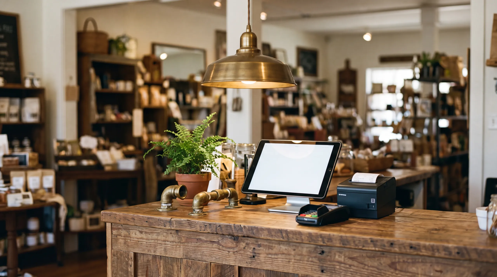

Find the Gap That’s Costing You
You’re not losing money because your work is bad. You’re losing it to the gaps — missed calls, forgotten follow-ups, reviews you never asked for. We close the gaps and grow what’s left: more of the right customers finding you, choosing you, and coming back — so you take home more while doing less.
62%
of calls to local businesses go unanswered — each one handed to a competitor
$49K+
average annual revenue lost to missed calls at a single local business
97%
of buyers check reviews before choosing — and 57% won’t consider under 4 stars
73%
of leads are never followed up after the first touch. The sale goes to whoever does